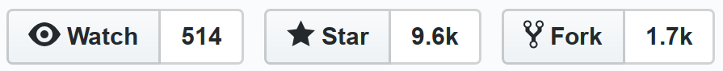
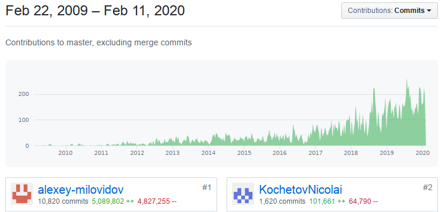

Why column-oriented?
This is how "traditional" row-oriented databases work:

analytical DBMS that can run everywhere:
— interactive analytic queries;
— on constantly appended data.
«Double realtime»
The most valuable feature of ClickHouse — it's speed.
2008 — first commits in codebase;
2010 — start of research and development;
2012 — use in production for some tasks;
2014 — use in production as core service technology;
2015 — widespread inside Yandex;
2016 — released in open-source!
Now — more than 1000 companies are using ClickHouse.
2008 — first commits in codebase;
I was a developer of Yandex.Metrica* service.
I had neither ideas or plans about ClickHouse
but some commits are dated back then.
* Yandex — is "russian Google" (and Uber and Amazon also)
* Yandex.Metrica — is "russian Google Analytics"
(№2 for traffic, 10.5% market share)
2008 — first commits in codebase;
2010 — start of research and development;
As an experimental side project.
We have tested multiple existing solutions (as of 2010):
MonetDB, Infobright, InfiniDB...
2008 — first commits in codebase;
2010 — start of research and development;
Nothing was good enough.
Hypothesis:
If we have good enough column-oriented DBMS,
we could store all our data in non-aggregated form
(raw pageviews and sessions) and generate all the reports on the fly,
to allow infinite customization.
This is how "traditional" row-oriented databases work:
And this is how column-oriented databases work:

2008 — first commits in codebase;
2010 — start of research and development;
2012 — use in production for some tasks;
(for intermediate data processing)
2008 — first commits in codebase;
2010 — start of research and development;
2012 — use in production for some data processing tasks;
2014 — use in production as core service technology;
(for realtime reporting)
The hypothesis was proved!
* If you want to try ClickHouse, one server or VM is enough.
2008 — first commits in codebase;
2010 — start of research and development;
2012 — use in production for some tasks;
2014 — use in production as core service technology;
2015 — widespread inside Yandex;
In multiple departments: search, e-commerce, advertisement, personalized news, infrastructure, NOC, business analytics...
2008 — first commits in codebase;
2010 — start of research and development;
2012 — use in production for some tasks;
2014 — use in production as core service technology;
2015 — widespread inside Yandex;
2016 — released in open-source!
2008 — first commits in codebase;
2010 — start of research and development;
2012 — use in production for some tasks;
2014 — use in production as core service technology;
2015 — widespread inside Yandex;
2016 — released in open-source!
Now — more than 1000 companies are using ClickHouse.

Press here please :) ---^
1. Satisfy our needs inside our company (Yandex).
2. Maximum widespread of ClickHouse as open-source product.

Rules of successful open-source:
— the product must solve actual problem;
— and do it better than others.
Our goal:
ClickHouse must be the default choice
as an open-source analytical DBMS
— the first and the only right solution
for appropriate use cases;
— and everyone should be aware of it :)
No time to celebrate.
— VK;
— Uber;
— Cisco;
— nVidia;
— Spotify;
— Mux.com;
— Amadeus;
— Bloomberg;
— CloudFlare;
— ContentSquare;
— Deutsche Bank;
— Citadel Securities;
— N-movie company;
— A-fruit company;
— National Payment System of (undisclosed) country.
ClickHouse
не тормозит
ClickHouse
is not slow*
High level architecture:
— Scale-out shared nothing;
— Massive Parallel Processing;
Data storage optimizations:
— Column-oriented storage;
— Merge Tree;
— Sparse index;
— Data compression;
Algorithmic optimizations:
All good algorithms will end up in ClickHouse!
— Volnitsky substring search
— Hyperscan and RE2
— SIMD JSON
— HDR Histograms
— Roaring Bitmaps
...
Low-level optimizations:
Optimizations for CPU instruction sets
using SIMD processing.
— SIMD text parsing
— SIMD data filtering
— SIMD decompression
— SIMD string operations
...
Specializations of algorithms...
... and attention to detail:
— uniq, uniqExact, uniqCombined, uniqUpTo;
— quantile, quantileTiming, quantileExact, quantileTDigest, quantileWeighted;
— 40+ specializations of GROUP BY;
— algorithms optimize itself for data distribution:
LZ4 decompression with Bayesian Bandits.
Open Source OLAP DBMS: Citus, MonetDB, InfoBright, InfiniDB, Greenplum...
Proprietary OLAP DBMS: Vectorwise, Vertica, kdb+, Teradata, HANA...
Time series DBMS: InfluxDB, TimescaleDB, OpenTSDB...
Log analytics: Splunk, ELK...
Data processing engines: Impala, Presto, SparkSQL, Druid, Drill...
Or: keep calm and use ClickHouse.
HTTP REST
clickhouse-client
JDBC, ODBC
(new) MySQL protocol compatibility
Python, PHP, Perl, Go,
Node.js, Ruby, C++, .NET, Scala, R, Julia, Rust
— better product quality;
— better Yandex representation as tech company;
— for hiring developers more easily;
— motivation of developers;
Drawbacks:
— it's hard work;
— and we're working really a lot;
Web site: https://clickhouse.tech/
Maillist: clickhouse-feedback@yandex-team.com
YouTube: https://www.youtube.com/c/ClickHouseDB
Telegram chat: https://telegram.me/clickhouse_en, clickhouse_ru
GitHub: https://github.com/ClickHouse/ClickHouse/
Twitter: https://twitter.com/ClickHouseDB
Google groups: https://groups.google.com/forum/#!forum/clickhouse